Fiches 4e année
57 fiches d'exercices 4e année en français : lecture, texte à trous et compréhension orale, à imprimer (PDF) avec corrigé.
57 ressources
Thème
Par thème: Culture générale
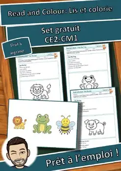
Atelier d'anglais: Read and Colour: Lis et colorie – Set gratuit (GRATUIT)
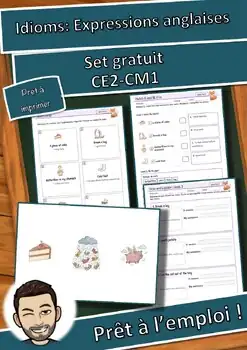
Atelier d'anglais: Idioms: Expressions anglaises – Set gratuit (GRATUIT)
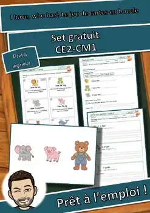
Atelier d'anglais: I have, who has? gratuit (GRATUIT)
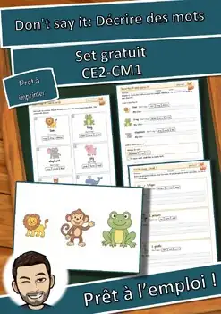
Atelier d'anglais: Don't say it: Décrire des mots – Set gratuit (GRATUIT)
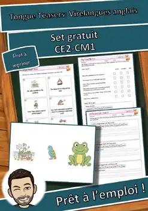
Atelier d'anglais: Tongue Teasers: Virelangues anglais – Set gratuit (GRATUIT)
Atelier d'anglais: All about me: Je me présente – Set gratuit (GRATUIT)
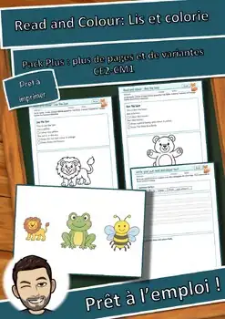
Atelier d'anglais: Read and Colour: Lis et colorie – Pack Plus
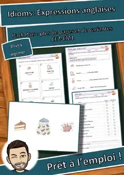
Atelier d'anglais: Idioms: Expressions anglaises – Pack Plus
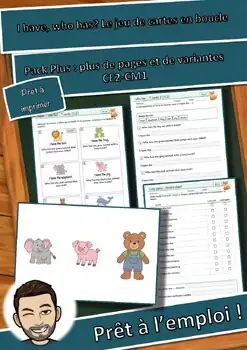
Atelier d'anglais: I have, who has? Le jeu de cartes en boucle – Pack Plus
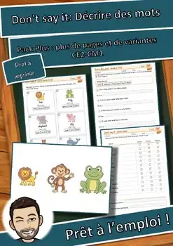
Atelier d'anglais: Don't say it: Décrire des mots – Pack Plus
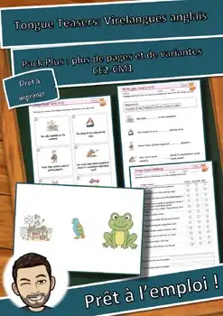
Atelier d'anglais: Tongue Teasers: Virelangues anglais – Pack Plus
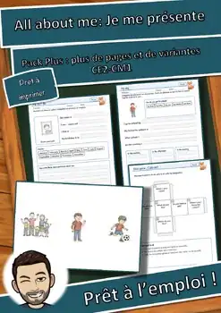
Atelier d'anglais: All about me: Je me présente – Pack Plus
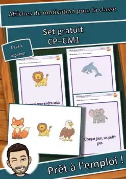
Atelier de classe: Affiches de motivation pour la classe – Set gratuit (GRATUIT)
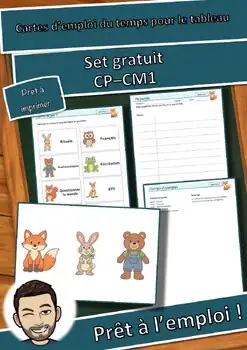
Atelier de classe: Cartes d’emploi du temps gratuit (GRATUIT)
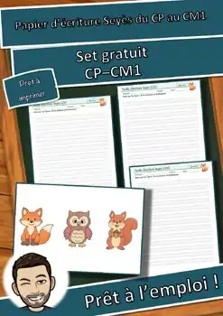
Atelier de classe: Papier d’écriture Seyès du CP au CM1 – Set gratuit (GRATUIT)
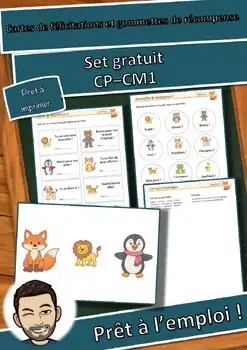
Atelier de classe: Cartes de félicitations gratuit (GRATUIT)
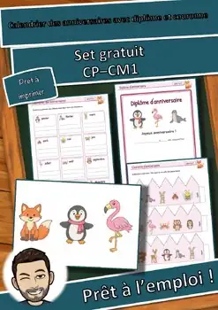
Atelier de classe: Calendrier des anniversaires gratuit (GRATUIT)
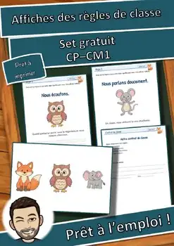
Atelier de classe: Affiches des règles de classe – Set gratuit (GRATUIT)
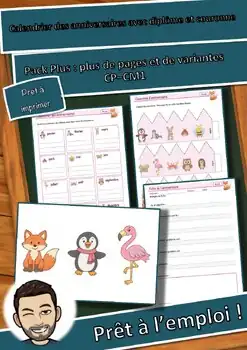
Atelier de classe: Calendrier des anniversaires Plus
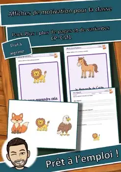
Atelier de classe: Affiches de motivation pour la classe – Pack Plus
Atelier de classe: Cartes d’emploi du temps pour le tableau – Pack Plus
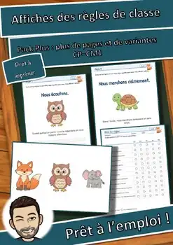
Atelier de classe: Affiches des règles de classe – Pack Plus
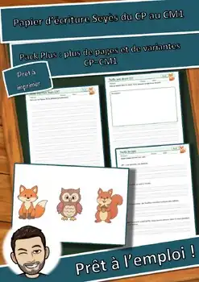
Atelier de classe: Papier d’écriture Seyès du CP au CM1 – Pack Plus
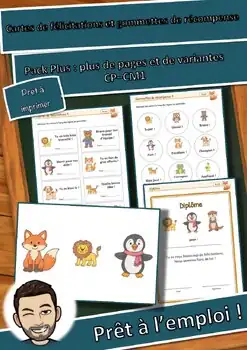
Atelier de classe: Cartes de félicitations Plus
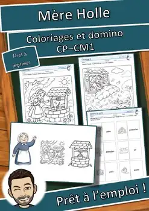
Atelier des contes: Mère Holle – Coloriages et domino (GRATUIT)
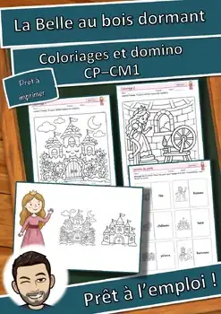
Atelier des contes: La Belle au bois dormant – Coloriages et domino (GRATUIT)
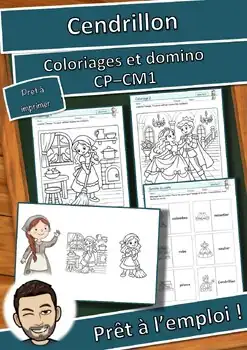
Atelier des contes: Cendrillon – Coloriages et domino (GRATUIT)
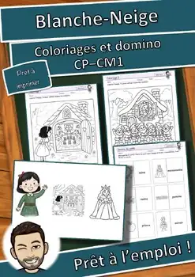
Atelier des contes: Blanche-Neige – Coloriages et domino (GRATUIT)
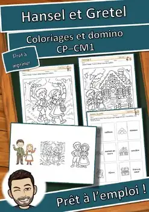
Atelier des contes: Hansel et Gretel – Coloriages et domino (GRATUIT)
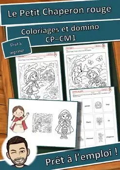
Atelier des contes: Chaperon rouge – Coloriages et domino (GRATUIT)
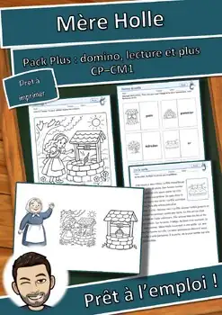
Atelier des contes: Mère Holle Pack Plus
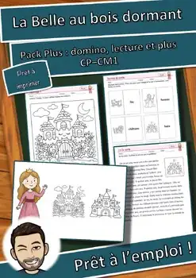
Atelier des contes: La Belle au bois dormant Pack Plus
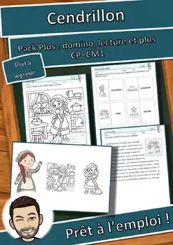
Atelier des contes: Cendrillon Pack Plus
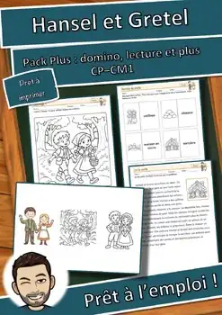
Atelier des contes: Hansel et Gretel Pack Plus
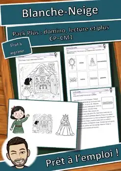
Atelier des contes: Blanche-Neige Pack Plus
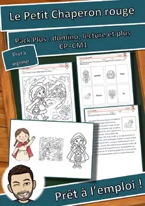
Atelier des contes: Chaperon rouge Pack Plus
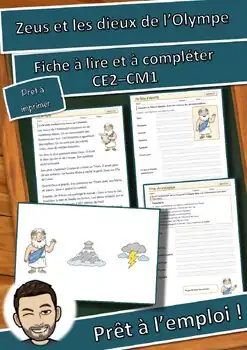
Atelier des personnages: Zeus – Fiche à lire et à compléter (GRATUIT)
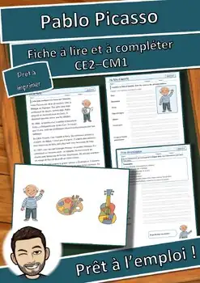
Atelier des personnages: Picasso – Fiche à lire et à compléter (GRATUIT)
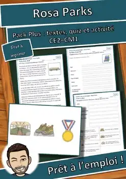
Atelier des personnages: Rosa Parks – Pack Plus : textes, quiz et activité
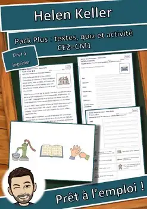
Atelier des personnages: Helen Keller – Pack Plus : textes, quiz et activité

Atelier des personnages: Marie Curie – Fiche à lire et à compléter (GRATUIT)
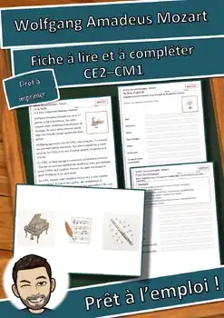
Atelier des personnages: Mozart – Fiche à lire et à compléter (GRATUIT)

L'histoire de Noël en dominos : 2 versions, mots-clés (CE1-CM1) GRATUIT

Lutins de la gentillesse : 24 défis et mots secrets (CP-CM1) GRATUIT

Calendrier de l'Avent de la classe : 24 portes, idées (CP-CM1) GRATUIT

Énigmes logiques d'hiver : 6 défis, 3 niveaux (CE2-CM1) GRATUIT

Énigmes logiques de Noël : 6 défis, 3 niveaux (CE2-CM1) GRATUIT

Cartes de vacances Renard : mascotte de classe, 3 niveaux | Français
Aucune ressource trouvée – essaie un autre mot ou un autre filtre.